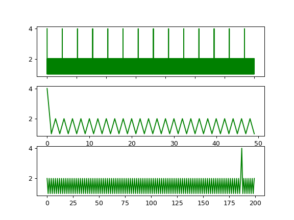
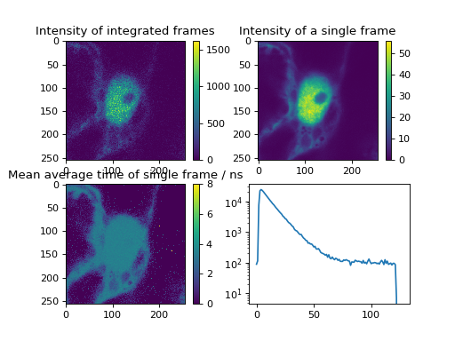
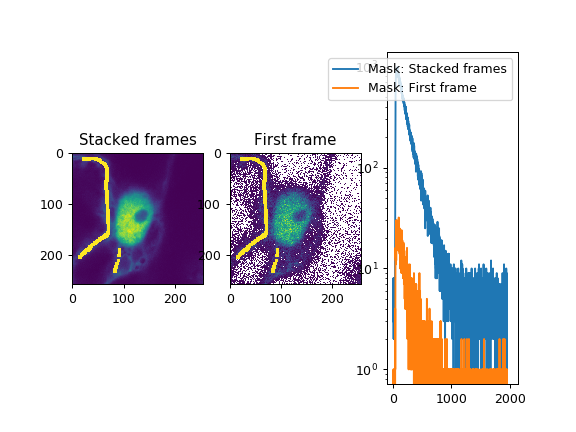
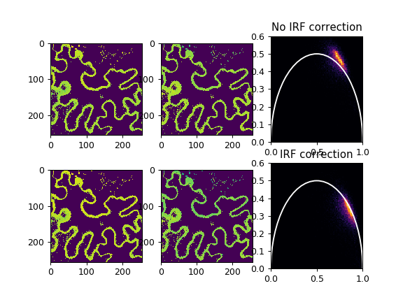
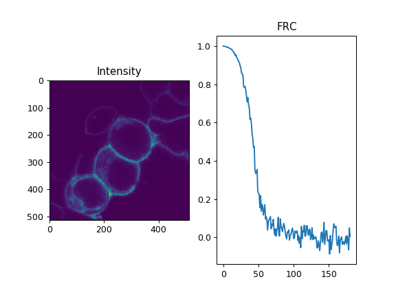
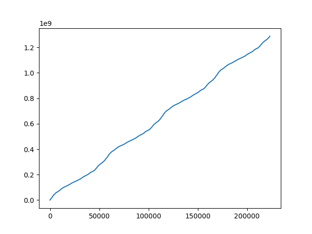
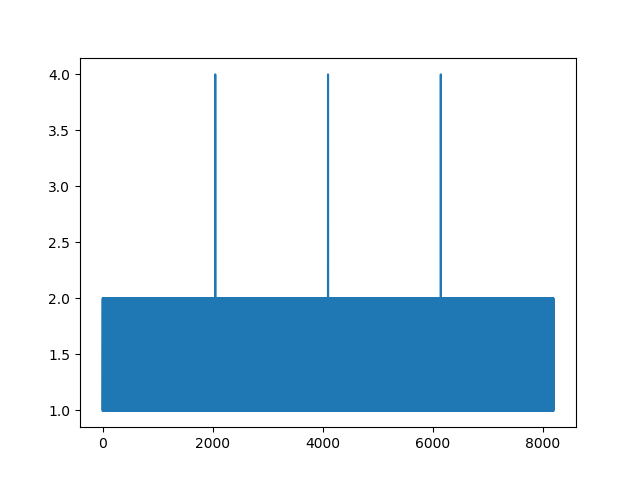
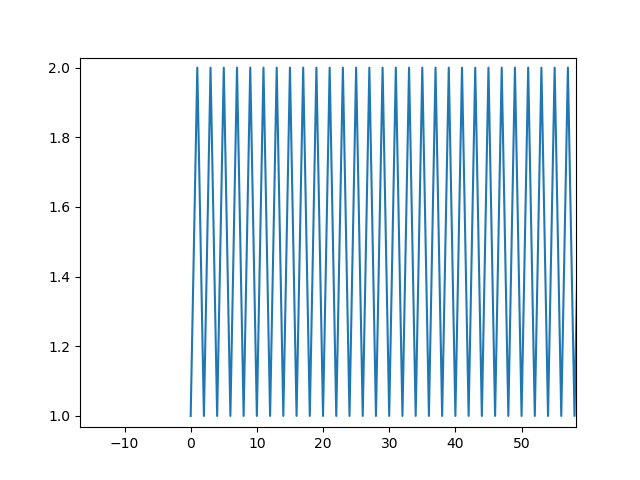
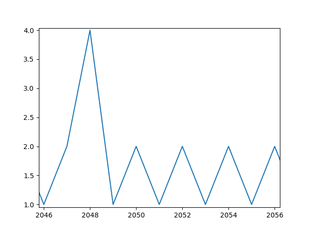
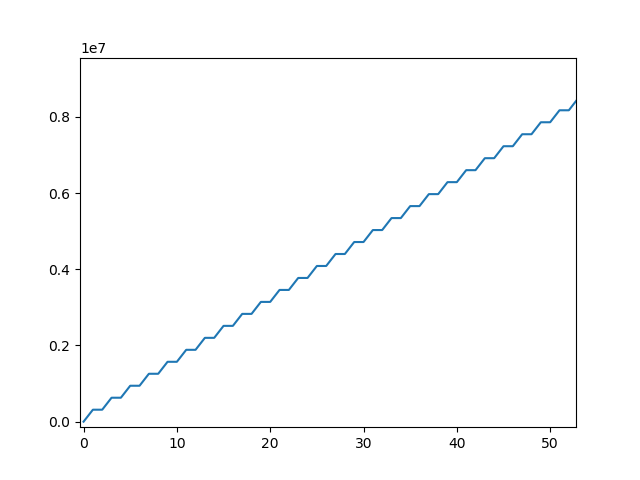

Image scanning¶
Overview¶
In confocal laser scanning microscopy (CLSM) the sample is scanned by a laser beam
either by moving the sample over a parked (fixed) laser beam (stage scanning)
or by deflecting the laser and moving the position of the exciting on a fixed
sample (laser scanning). In both cases, the position of the detection volume
within the sample needs to be saved in the recorded TTTR event stream. In the
section Theory the basics of CLSM data are described. In the section
Image construction basic python functions are used to create an CLSM image
using TTTR objects. In the section CLSMImage it is explained how to use
tttrlib’s C++ interface to efficiently create CLSM images and different
CLSM representations, e.g., intensity images, mean micro time images are
presented with a brief application and example source-code. Moreover, for an CLSM
image the resolution is estimated) by Fourier
Ring Correlation and it is described how CLSM markers can be analyezed only given
the photon stream using data from an Leica SP8 a example.
Theory¶
Markers in TTTRs¶
The position of the laser in the TTTR event stream is encoded by injecting markers into the event stream the report on the laser position. Some manufactures present these markers as special “”events”” that are distinguished from normal photon events. Some manufacturers use the same routing channel numbers for markers and for photon detection channels. To distinguish photons from markers,``TTTR`` objects present for every event an additional event type specifier (see TTTR-Objects).
The position of the laser on the sample is mostly defined by the following markers
A frame marker
A line start marker
A line stop marker
The line start and the line stop marker define a valid region of the image. In confocal laser scanning microscopy (CLSM) the laser beam is usually repositioned between the line stop and the line start marker. The detectors are usually switched on in this period and register how the laser is fast repositioned on the sample. The TTTR stream can be also processed outside of this valid region. However, then the pixel sizes may not be uniform.
The assignment of the markers to channels depends on the configuration of the microscope. Below it is briefly outlined how these markers can be assigned to channels.
Below a typical traces of channel numbers for special events are shown.
(Source code, png)
{kind=link}

To the top a longer trace of special events channel numbers is shown. As can be seen by inspecting the traces of special events, channel number 4 is followed by an interleaved sequence of channel number 1 and channel number 2. This identifies channel 4 as frame number and channel 1 and 2 as, line start and line stop, respectively. As is shown for the end of the special event channel trace, the last frame marker is followed by an incomplete frame. This is not uncommon. Hence, the photons registered following the last frame number should be rejected, as they would result in an incomplete image.
The markers markers and the photons between the markers need to be analyzed to form an image.
Image construction¶
Below, using a few lines of python code it is outlined how CLSM images can be
constructured. For productive uses tttrlib provides a set of functions to
create images based on CLSM TTTR data implemented in C/C++. To describe how this
is actually implemented, it is outlined below in Python only using basic the basic
functionality of tttrlib. The presented outline presented below may serve to
understand how the image construction in CLSM work and is not intended for
productive use.
Before creating an image the channel numbers of the frame and the line markers need to be determined. For the example that is shown above the frame, line start, and line stop markers are 4, 1, and 2, respectively. Next, the TTTR data needs to be loaded into memory, the number of frames, and the number of lines need to be determined in order to allocate memory for the image. In CLSM the number of pixels per line can be arbitrarily defined, as the laser beam is continuously displaced and the fluorescence of the sample is continuously recorded. Hence, the main experimental determinants of the image size in memory are the number of frames and the number of line scans per frame. Usually, the number of line scans per frame is constant within a TTTR file.
The number of frames can be determined by counting extracting and counting the number of frame markers as shown below.
import tttrlib
import numpy as np
import pylab as p
def count_marker(channels, event_types, marker, event_type):
n = 0
for i, ci in enumerate(channels):
if (ci == marker) and (event_types[i] == event_type):
n += 1
return n
def find_marker(channels, event_types, maker, event_type=1):
r = list()
for i, ci in enumerate(channels):
if (ci == maker) and (event_types[i] == event_type):
r.append(i)
return np.array(r)
events = tttrlib.TTTR('./examples/PQ/HT3/PQ_HT3_CLSM.ht3', 1)
e = events.get_event_type()
c = events.get_routing_channel()
t = events.get_macro_time()
m = events.get_micro_time()
frame_marker_list = find_marker(c, e, 4)
line_start_marker_list = find_marker(c, e, 1)
line_stop_marker_list = initialize(c, e, 2)
n_frames = len(frame_marker_list) - 1 # 41
n_line_start_marker = len(line_start_marker_list) # 10246
n_lines_per_frame = n_line_start_marker / n_frames # 256
line_duration_valid = t[line_stop_marker_list] - t[line_start_marker_list]
line_duration_total = t[line_start_marker_list[1:]] - t[line_start_marker_list[0:-1]]
n_pixel = 256
pixel_duration = line_duration_valid // n_pixel
line_duration_valid = t[line_stop_marker_list] - t[line_start_marker_list]
Note
The channel number of the frame makers (here 4) depends on the experimental setup. Moreover, some setup configurations use “photons” event types to record special events. Different microscopes may use different markers. For common microscopes such as the Leica SP5 and Leica SP8 ready-to-use image processing routines are provided.
In the example above, first the number of frames are counted. Next, the number of
start line events are counted. In the example, there are overall 41 frames are present
in the file each having 256 lines. As the last frame is often incomplete (see Figure
above) the last frame is neglected (41 - 1 = 40). With the script above, the number
of frames n_frames and the number of lines per frame n_lines_per_frame is
determined. Next, the number of pixel per line n_pixel can be freely defined.
Based on the time the laser spends in each line, the duration per pixel (the laser
is constantly scanning) needs to be calculated. Here, there are two options: 1)
either the total time from the beginning of each new line (line start) to the beginning
of the next line is considered as a line or 2) the time between the line start and
the line stop is considered as the time base to calculate the pixel duration. In
the first case, the back movement of the laser to the line start can be visualized
in the image. In the later case, only the valid region where the laser scans over
the sample is visualized. For most applications the later approach is useful. To
understand the microscope laser scanner the former approach is more useful. Above,
line_duration_valid is the time the laser spends in every of the lines in a
valid region and line_duration_total is the total time the laser spends in a
line including the rewind to the line beginning. Above, n_pixel is the freely
defined number of pixels per line and pixel_duration is the duration of every
pixel. With the number of frames n_frames, the number of pixels n_pixel,
and the number of lines n_lines_per_frame it is clear how much the memory for
an image needs to be can be allocated and with the defined number of pixels per
line the duration for the pixel can be calculated for all the lines of the frames.
With these numbers an image for a certain set of detector channels detector_channels
can be calculated. Below this is by the function make_image.
def make_image(
c, m, t, e,
n_frames, n_lines_per_frame, pixel_duration,
channels,
frame_marker=4,
start=1,
stop=2,
n_pixel=None,
tac_coarsening=32,
n_tac_max=2**15):
if n_pixel is None:
n_pixel = n_lines_per_frame # assume squared image
n_tac = n_tac_max / tac_coarsening
image = np.zeros((n_frames, n_lines_per_frame, n_pixel, n_tac))
# iterate through all photons in a line and add to image
frame = -1
current_line = 0
time_start_line = 0
invalid_range = True
mask_invalid = True
for ci, mi, ti, ei in zip(c, m, t, e):
if ei == 1: # marker
if ci == frame_marker:
frame += 1
current_line = 0
if frame < n_frames:
continue
else:
break
elif ci == start:
time_start_line = ti
invalid_range = False
continue
elif ci == stop:
invalid_range = True
current_line += 1
continue
elif ei == 0: # photon
if ci in channels and (not invalid_range or not mask_invalid):
pixel = int((ti - time_start_line) // pixel_duration[current_line])
if pixel < n_pixel:
tac = mi / tac_coarsening
image[frame, current_line, pixel, tac] += 1
return image
image = make_image(c, m, t, e, n_frames, n_lines_per_frame, pixel_duration,
channels=np.array([0, 1])
)
In the example function make_image the an 3D array is created that contains in
every pixel a histogram of the micro times. An histogram of the micro time can be
displayed by the code shown below:
fig, ax = p.subplots(1, 2)
ax[0].imshow(image.sum(axis=(0, 3)), cmap='inferno')
ax[1].plot(image.sum(axis=0)[175,128])
p.show()
The outcome of such analysis for a complete working example is shown below including all necessary source code is here.
For any practical applications it is recommended the determine the images using
the built-in functions of tttrlib. Using this functions is illustrated below.
CLSMImage¶
Data structure¶
CLSM recordings are not imaging data in a classical sense. There is no strict definition of a pixel and in pulsed time-resolved (tr) experiments that can have multiple lasers (Pulsed Interleaved Excitation, PIE) and multiple detectors that resolve the polarization and the spectral ranges of the photons (Multiparameter Fluorescence Detection, MFD). Hence, a standard imaging data structure is not a very handy format to operate on time-resolved PIE-MFD CLSM data. Moreover, CLSM data can encode multiple frames, either from time-series or 3D stacks.
tttrlib handles CLSM images by the CLSMImage class. The CLSMImage class
implements a data structure for CLSM images that can be used to query photons of
pixels in frames, lines, and pixels of CLSM data. For that, CLSMImage processes
TTTR objects. The photons contained in the TTTR object are grouped based on
the specified markers. After reading the TTTR data into a TTTR object, the
TTTR object is used to create a new CLSMImage object.
Use Python and C/C++¶
As was pointed out above based on a few lines of Python source code (see Image scanning:Confocal laser scanning:Theory) to construct an image
the frame marker
the line start marker
the line stop marker
the detector channel numbers
the number of pixels per scanning line
need to be specified. Based on these parameters, the indices of the photons in the
TTTR data stream are assigned to frames, lines, and pixels. When creating a CLSMImage
object with a TTTR object that contains the photon stream a set of CLSMFrame,
CLSMLine, and CLSMPixel objects are create.
from __future__ import print_function
import tttrlib
import numpy as np
import pylab as p
data = tttrlib.TTTR('./examples/PQ/HT3/PQ_HT3_CLSM.ht3', 1)
frame_marker = 4
line_start_marker = 1
line_stop_marker = 2
event_type_marker = 1
pixel_per_line = 256
image = tttrlib.CLSMImage(
data,
frame_marker,
line_start_marker,
line_stop_marker,
event_type_marker,
pixel_per_line,
reading_routine='default'
)
Note
In the example above the reading routine is specified to the default (=0). If
no reading routine is specified the CLSMImage class uses the channel number
of an event to identify line start/stops and frame marker. In Leica SP8 PTU files
the micro time of an photon events encodes the type of the event. Here, a different
reading routine needs to be specified.
The last parameter (here 0) specifies the reading routine (parameter = reading_routine)
for the line and frame markers. The supported marker types are shown in the table
below.
Line, Framer marker type |
Option |
|
|---|---|---|
Default (routing channel) |
default |
|
Leica SP8 (micro time) |
SP8 |
|
Leica SP5 (micro time) |
SP5 |
|
As illustrated by the code shown below, every CLSMImage object may contain multiple
CLSMFrame objects , every CLSMFrame contain a set of CLSMLine objects,
and every CLSMLine object contains multiple CLSMPixel objects. The number
of CLSMPixel objects per line is specified upon instantiation if the CLSMImage
object (see code example above). The CLSMFrame, CLSMLine, and the CLSMPixel
classes derive from the TTTRRange class and provide access to the associated
TTTR indices that mark the beginning and the end of the respective object via the
function get_start_stop (see example below).
frames = image.get_frames()
frame = frames[0]
print("Frame")
print("-----")
print("start, stop: ", frame.get_start_stop())
print("start time, stop time: ", frame.get_start_stop_time())
print("duration: ", frame.get_duration())
lines = frame.get_lines()
line = lines[0]
print("Line")
print("-----")
print("start, stop: ", line.start_stop
print("start time, stop time: ", line.get_start_stop_time())
print("duration: ", line.get_duration())
pixels = line.get_pixels()
pixel = pixels[100]
print("Pixel")
print("-----")
print("start, stop: ", pixel.get_start_stop())
print("start time, stop time: ", pixel.get_start_stop_time())
print("duration: ", pixel.get_duration())
Object of the CLSMImage class store the frame, line, and pixel location of the
TTTR data stream that was used to create the CLSMImage object. Next, to determine
images, the detection channels of interest need to be specified using the method
fill_pixels. The method fill_pixels populates the
Note
The pixels are not filled with start and stop indices and associated start and stop times, as the channels of the image have not been defined.
To fill the pixels, it has to be defined, which detection channels are used. Next, the pixels can be filled. When filling the pixels, to every pixel a start and stop time in the TTTR data stream is associated.
channels = (0, 1)
image.fill_pixels(data, (0, 1))
print("Pixel")
print("-----")
print("start, stop: ", pixel.get_start_stop())
print("start time, stop time: ", pixel.get_start_stop_time())
print("duration: ", pixel.get_start_stop_time())
image_intensity = image.intensity
image_decay = image.get_fluorescence_decay_image(data, 32)
p.imshow(image_intensity.sum(axis=0))
p.show()
p.semilogy(image_decay.sum(axis=(0,1,2)))
p.show()
To yield the mean time between excitation and detection of fluorescence the method
get_mean_micro_time_image can be used. The example shown below shows the counts per
pixel for all frames (top, left), the counts per pixel for frame number 30 (top,
right), and the mean time between excitation and detection of fluorescence (bottom,
left). The function get_mean_micro_time_image takes in addition to the TTTR data an
argument that discriminates pixels with less than a certain amount of photons (below
3 photons). As can be seen by this analysis, the mean time between excitation and
detection of fluorescence is fairly constant over the cell, while the intensity
varies in this particular sample.
For more detailed analysis the fluorescence decays contained in the 4D image (frame,
x, y, fluorescence decay) returned by get_fluorescence_decay_image can be used,
e.g., by analyzing fluorescence decay histograms. A full example that generates a
fluorescence decay containing all photons of the 30 frames is shown below.
Creating CLSM images¶
When a new CLSMImage object is created, the markers are processed. If the
number of lines is set to zero the number of pixels per line is set to the number
of lines. To create CLSM image the TTTR object needs to be provided in addition
to the markers.
filename = './test/data/imaging/pq/ht3/pq_ht3_clsm.ht3'
data = tttrlib.TTTR(filename, 'HT3')
reading_parameter = {
"marker_frame_start": [4],
"marker_line_start": 1,
"marker_line_stop": 2,
"marker_event_type": 1,
"n_pixel_per_line": 256, # if zero n_pixel_per_line = n_lines
"reading_routine": 'default'
}
clsm_image = tttrlib.CLSMImage(
tttr_data=data,
**reading_parameter
)
The frames in a CLSMImage object are CLSMFrame objects. Lines in frame are
CLSMLine objects and pixels in lines are CLSMPixel objects. The CLSMFrame,
CLSMLine, and the CLSMPixel class inherent from the TTTRRange class
(see TTTR-Objects:TTTR ranges). Briefly, TTTRRange objects keep track of the
photon indices in a given range.
After a CLSMImage object is created without specifying the channels, it is an
container that keeps track of the beginning and end of the frames, lines. The pixels
in the lines are empty and do not refer to photon indices. The frames, lines, and
pixels of a CLSMImage object can be accessed by their index.
clsm_image = tttrlib.CLSMImage(
tttr_data=data,
**reading_parameter
)
frame = clsm_image[0]
line = frame[100]
pixel = line[100]
len(pixel.tttr_indices) == 0 # True
The indices of the photons in a pixel can be accessed by the attribute tttr_indices.
To fill the pixels, the channel of interest needs to be specified by its channel
number.
clsm_image.fill_pixels(
tttr_data=data,
channels=[0]
)
len(pixel.tttr_indices) == 0 # False
When filling the pixels with photons that are identified via their channel number in the tttr data, multiple channels can be specified.
Alternatively, the channels can be specified when a CLSMImage object is created.
filename = './test/data/imaging/pq/ht3/pq_ht3_clsm.ht3'
reading_parameter = {
"tttr_data": tttrlib.TTTR(filename, 'HT3')
"marker_frame_start": [4],
"marker_line_start": 1,
"marker_line_stop": 2,
"marker_event_type": 1,
"n_pixel_per_line": 256, # if zero n_pixel_per_line = n_lines
"reading_routine": 'default',
"fill": True,
"channels": [0, 2]
}
clsm_image = tttrlib.CLSMImage(**reading_parameter)
len(pixel.tttr_indices) != 0 # True
Here, the optional parameter “channels” in combination with the optional parameter
“fill” instruct the constructor of CLSMImage to fill the pixels with events that
are identified by the routing channel numbers 0 and 2.
After filling the pixels with tttr indices (photon indices) the CLSM container can be used to create different representations of the data. A representation of the data is for instance an intensity image that counts the photons in each pixel, a mean micro time image, a 3D map that contains a fluorescence decay histogram at every pixel, or an 3D map that contains a correlation function that is computed over the photons in each pixel.
Copying CLSM images¶
A new CLSMImage object can be created using an existing CLSMImage object
as a template.
When creating a CLSMImage object using another CLSMImage object as a source
the frames, lines, and pixels are copied. When the optional parameter fill is
set the tttr indices of the photons are copied as well.
CLSM representations¶
Representations¶
The are several ways how the data contain in CLSM images can be represented and analyzed. For instance, images can be computed where every pixel contains an average fluorescence lifetime or an intensity. A few representations for CLSM data and scripts how to generate these representations are outlined here.
(Source code, png)
{kind=link}

The figure displayed above corresponds to a live-cell FLIM measurement of eGFP. The fluorescent label eGFP is often used as an donor fluorophore in FRET experiments. In the image shown above, eGFP was measured in the absence of FRET. The intensity image shows a non uniform intensity in the cell. However, an image of the mean arrival time reveals as expected a uniform distribution. Inspecting the fluorescence decay curve of the corresponding image reveals a fluorescence decay that is not curved and hence likely single exponential.
Intensity¶
An intensity image of a CLSMImage instance that has been filled with photons
can be created by counting the number of photons in each pixel. This can either
be accomplished by iterating over the frames, lines, and pixels or by using the
method fill_pixels of a CLSMImage instance.
Iterating large images and multiple pixels in python generates a large overhead. Hence, the recommended procedure that is equivalent to the code above to generate intensity images is the second option.
Mean micro time¶
To create an image of the mean micro times in a pixel the method get_mean_micro_time_image of a
CLSMImage instance has to be provided with a TTTR object the method uses
the tttr indices of the photons stored in the CLSMPixel objects to look-up the
micro times of the respective photons. The micro times of every pixel are average
to yield an average arrival time of the photons in a pixel.
The pixel-wise average arrival time over the frames in a CLSMImage object is
computed by the method get_mean_micro_time_image when the optional parameter
stack_frames is set to True.
Note
The average over a stack of average arrival times and the stacked and averaged arrival times differ. If the average arrival time is computed for every frame and then the arrival times are averaged, the number of photons that resulted in the average is not considered. Thus, the two averages in the code-block displayed above differ.
Average fluorescence lifetime¶
Fluorescence decay histograms¶
The micro times of the photons in every pixel can be binned to yield a fluorescence
decay histogram for every pixel in the CLSM image. This is implemented in the method
get_fluorescence_decay_image of CLSMImage objects.
When the optional parameter stack_frames is set to True (the default value is
False). The optional parameter micro_time_coarsening is used to decrease the
resolution of the fluorescence decay histogram. The default value of micro_time_coarsening
is 1 and the micro time resolution is used as is. A value of 2 decreases the micro
time resolution by a factor of 2.
Note
A four dimensional array may consume a considerable amount of memory. Thus,
use appropriate values for the parameters of get_fluorescence_decay_image
to reduce the memory consumption.
Pixel averaged decays¶
Using selection masks the signal to noise of the fluorescence decays can be greatly improved to allow for a detailed analyis. Here it is briefly outlined, how pixels are selected and fluorescence decays of these pixel sub-populations can be created.
(Source code, png)
{kind=link}

Pixels are selected by a pixel mask, i.e., arrays of the same size as a CLSM image. The micro times of the photons associated to the selected pixels can be binned into fluorescence decay histograms. This way, fluorescence decays of regions of interest (ROIs) can be created. ROIs can be defined by normal bitmap images. A different ROI can be used for each frame in an CLSM image.
The decays of the different frames can be stacked by setting the parameter stack_frames
to True.
Note
To keep the memory consumption low, we use only 8 bit per element in the selection mask.
Phasor¶
The phasor method’s prospective is a model free analysis that has certain advantages over conventional nonlinear curve fitting. Nonlinear curve-fitting analysis is computationally-intensive and sensitive to potential inaccuracies due to correlations between computed terms. Conversely, phasor analysis provides a computationally-simple, robust approach to investigate variations in fluorescence lifetime measurements.
(Source code, png)
{kind=link}

Top phasor without instrument response function (IRF) correction. Bottom phasor with IRF correction.
Correlation function¶
Every pixel is defined by a list of TTTR indices. To these indices a macro time and micro time are associtate. Hence, correlation functions can be computed.
Estimation of the image resolution¶
In electron microscopy the Fourier Ring Correlation (FRC) is widely used as a measure for the resolution of an image. This very practical approach for a quality measure begins to get traction in fluorescence microscopy. Briefly, the correlation between two subsets of the same images are Fourier transformed and their overlap in the Fourier space is measured. The FRC is the normalised cross-correlation coefficient between two images over corresponding shells in Fourier space transform.
In CLSM usually multiple images of the sample sample are recoded. Thus, the resolution of the image can be estimated by the FRC. Below a few lines of python code are shown that read a CLSM image, split the image into two sets, and plot the FRC of the two subsets is shown for intensity images.
(Source code, png)
{kind=link}

The above approach is used by the software ChiSurf. In practice, a set of CLSM images can be split into two subsets. The two subsets can be used to estimate the resolution of the image.
Analyzing CLSM marker¶
Not always it is completely documented by the manufacturer of a microscope how the laser scanning is implemented. Meaning, how the frame and line marker are integrated into the event data stream. Below, it is briefly outlined on a test case how for a given image the event stream can analyzed. The example data illustrated below, was recored on a Leica SP8 with three hybrid detectors and PicoQuant counting electronics.
First, the data corresponding to the image needs to be exported from the Leica file
container to yield a PTU file that contains the TTTR events. This file is loaded
in tttrlib and the event types, the routing channel numbers, the macro time,
and the micro time are inspected.
from __future__ import print_function
import tttrlib
import numpy as np
import pylab as p
data = tttrlib.TTTR('./examples/Leica/SP8_Hybrid_detectors.ptu', 'PTU')
e = data.get_event_type()
c = data.get_routing_channel()
t = data.get_macro_time()
m = data.get_micro_time()
As a first step, the routing channels are inspected to determine the actual channel numbers of the detectors. By making a bincount of the channel numbers the number how often a channel occurs in the data stream and the channel numbers in the data stream can be determined.
# Look for used channels
y = np.bincount(c)
print(y)
p.plot(y)
p.show()
For the given dataset three channels were populated (channel 1, channel 2, channel 3, and channel 15). The microscopy is only equipped with three detectors. The counts per channel were as follows
1 - 2170040
2 - 43020969
3 - 198919134
15 - 8194
Note
Usually, the TTTR records utilize the event type to distinguish markers from photons. Here, Leica decided to use the routing channel number to identify markers.
Based on these counts channel 15 very likely identifies the markers. The number of events 8090 closely matches a multiple of 2 (8194 = 4 * 1024 * 2 - 1 + 3). Note, there are 1024 lines in the images, 4 images in the file.
By looking at the macro time one can also identify that there are four images in the file, as intensity within the image in non-uniform. Hence, the macro time fluctuates.

To make sure that the routing channels 1, 2, and 3 are indeed detection channels, one can create (in a time-resolved experiment) a bincount of the associated micro times.
y = np.bincount(m_ch_1)
p.plot(y)
p.show()
y = np.bincount(m_ch_2)
p.plot(y)
p.show()
y = np.bincount(m_ch_3)
p.plot(y)
p.show()
Next, to identify if in addition to the channel number 15 the markers are identified by non-photon event marker we make a bincount of the channel numbers, where the event type is 1 (photon events have the event type 0, non-photon events have the event type 1).
y = np.bincount(c[np.where(e==1)])
print(y)
p.plot(y)
p.show()
The bin count yield the following:
1 - 1950
2 - 48349
3 - 172871
This means we never have events where the channel number is 15 and the event type is 1. Moreover, the number of special events scales with the number of counts in a channel. Thus, the special events are very likely to mark overflows or gaps in the stream.
To sum up, channel 1, 2, and 3 were determined as the routing channels of the detectors. Channel 15 is the routing channel used to inject the special markers. Next, we inspect the micro time and the macro time of the events registered by the routing channel 15.
m_ch_15 = m[np.where(c == 15)]
p.plot(m_ch_15)
p.show()

The plot of the micro times for the events of the routing channel 15 reveals, that the micro time is either 1, 2, or 4. A more close inspection reveals that a micro time value of 1 is always succeeded by a micro time value of 2.

A micro time value of 4 is followed by a micro time value of 1.

This means, that the micro time encodes the frame marker and the line start/stop markers.
micro time 1 - line start
micro time 2 - line stop
micro time 4 - frame start
Note
The first frame does not have a frame start.
Next, the macro time of the events where the routing channel number equals 15 is inspected. As anticipated, the macro time increases on first glance continuously. On closer inspection, however, steps in the macro time are visible.

To sum up, in the Leica SP8 PTU files
line and frame markers are treated as regular photons.
the line and frame markers are identified by the routing channel number 15
the type of a marker is encoded in the micro time of channels with a channel number 15
Note
Usually, the TTTR records utilize the event type to distinguish markers from
photons. Here, Leica decided to use the routing channel number to identify markers.
When opening an image in tttrlib this special case is considered by specifying
the reading routine.